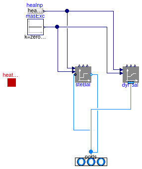
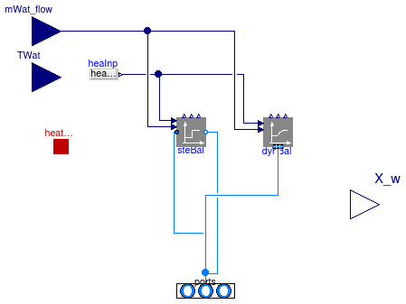

Package with mixing volumes
This package contains models for completely mixed volumes.
For most situations, the model Buildings.Fluid.MixingVolumes.MixingVolume should be used. The other models are only of interest if water should be added to or subtracted from the fluid volume, such as in a coil with water vapor condensation.
Extends from Modelica.Icons.VariantsPackage (Icon for package containing variants).
| Name | Description |
|---|---|
| Mixing volume with inlet and outlet ports (flow reversal is allowed) | |
| MixingVolumeMoistAir | Mixing volume with heat port for latent heat exchange, to be used with media that contain water |
| Collection of models that illustrate model use and test models | |
| Package with base classes for Buildings.Fluid.MixingVolumes |
Mixing volume with inlet and outlet ports (flow reversal is allowed)

This model represents an instantaneously mixed volume.
Potential and kinetic energy at the port are neglected,
and there is no pressure drop at the ports.
The volume can exchange heat through its heatPort.
The volume can be parameterized as a steady-state model or as dynamic model.
To increase the numerical robustness of the model, the parameter
prescribedHeatFlowRate can be set by the user.
This parameter only has an effect if the model has exactly two fluid ports connected,
and if it is used as a steady-state model.
Use the following settings:
prescribedHeatFlowRate=true if there is a model connected to heatPort
that computes the heat flow rate not as a function of the temperature difference
between the medium and an ambient temperature. Examples include an ideal electrical heater,
a pump that rejects heat into the fluid stream, or a chiller that removes heat based on a performance curve.
prescribedHeatFlowRate=true if the only means of heat flow at the heatPort
is computed as K * (T-heatPort.T), for some temperature T and some conductance K,
which may itself be a function of temperature or mass flow rate.
mSenFac can be used to increase the thermal mass of this model
without increasing its volume. This way, species concentrations are still calculated
correctly even though the thermal mass increases. The additional thermal mass is calculated
based on the density and the value of the function HeatCapacityCp
of the medium state state_default. mSenFac = 1, hence
the mass is unchanged. For higher values of mSenFac, the mass will be scaled proportionally.
If the model is operated in steady-state and has two fluid ports connected,
then the same energy and mass balance implementation is used as in
steady-state component models, i.e., the use of actualStream
is not used for the properties at the port.
The implementation of these balance equations is done in the instances
dynBal for the dynamic balance and steBal
for the steady-state balance. Both models use the same input variables:
Q_flow is used to add sensible and latent heat to the fluid.
For example, Q_flow participates in the steady-state energy balance
port_b.h_outflow = inStream(port_a.h_outflow) + Q_flow * m_flowInv;
where m_flowInv approximates the expression 1/m_flow.
mXi_flow is used to add a species mass flow rate to the fluid.
For simple models that uses this model, see Buildings.Fluid.HeatExchangers.HeaterCoolerPrescribed and Buildings.Fluid.MassExchangers.HumidifierPrescribed.
Extends from Buildings.Fluid.MixingVolumes.BaseClasses.PartialMixingVolume (Partial mixing volume with inlet and outlet ports (flow reversal is allowed)).
| Type | Name | Default | Description |
|---|---|---|---|
| replaceable package Medium | PartialMedium | Medium in the component | |
| Volume | V | Volume [m3] | |
| Nominal condition | |||
| MassFlowRate | m_flow_nominal | Nominal mass flow rate [kg/s] | |
| Dynamics | |||
| Equations | |||
| Dynamics | energyDynamics | Modelica.Fluid.Types.Dynamic... | Formulation of energy balance |
| Dynamics | massDynamics | energyDynamics | Formulation of mass balance |
| Real | mSenFac | 1 | Factor for scaling the sensible thermal mass of the volume |
| Initialization | |||
| AbsolutePressure | p_start | Medium.p_default | Start value of pressure [Pa] |
| Temperature | T_start | Medium.T_default | Start value of temperature [K] |
| MassFraction | X_start[Medium.nX] | Medium.X_default | Start value of mass fractions m_i/m [kg/kg] |
| ExtraProperty | C_start[Medium.nC] | fill(0, Medium.nC) | Start value of trace substances |
| ExtraProperty | C_nominal[Medium.nC] | fill(1E-2, Medium.nC) | Nominal value of trace substances. (Set to typical order of magnitude.) |
| Advanced | |||
| MassFlowRate | m_flow_small | 1E-4*abs(m_flow_nominal) | Small mass flow rate for regularization of zero flow [kg/s] |
| Assumptions | |||
| Boolean | allowFlowReversal | true | = true to allow flow reversal in medium, false restricts to design direction (ports[1] -> ports[2]). Used only if model has two ports. |
| Heat transfer | |||
| Boolean | prescribedHeatFlowRate | false | Set to true if the model has a prescribed heat flow at its heatPort. If the heat flow rate at the heatPort is only based on temperature difference, then set to false. |
| Type | Name | Description |
|---|---|---|
| VesselFluidPorts_b | ports[nPorts] | Fluid inlets and outlets |
| HeatPort_a | heatPort | Heat port for sensible heat input |
Mixing volume with heat port for latent heat exchange, to be used with media that contain water

This model represents the same physics as
Buildings.Fluid.MixingVolumes.MixingVolume, but in addition, it allows
adding or subtracting water in liquid phase.
The mass flow rate of the added or subtracted water is
specified at the port mWat_flow.
The water flow rate is assumed to be added or subtracted at the
temperature of the input port TWat.
Adding water causes a change in
enthalpy and species concentration in the volume.
Note that this model can only be used with medium models that include water
as a substance. In particular, the medium model needs to implement the function
enthalpyOfLiquid(T) and the integer variable Water that
contains the index to the water substance. For medium that do not provide this
functionality, use
Buildings.Fluid.MixingVolumes.MixingVolume.
Extends from BaseClasses.PartialMixingVolume (Partial mixing volume with inlet and outlet ports (flow reversal is allowed)).
| Type | Name | Default | Description |
|---|---|---|---|
| replaceable package Medium | PartialMedium | Medium in the component | |
| Volume | V | Volume [m3] | |
| Nominal condition | |||
| MassFlowRate | m_flow_nominal | Nominal mass flow rate [kg/s] | |
| Dynamics | |||
| Equations | |||
| Dynamics | energyDynamics | Modelica.Fluid.Types.Dynamic... | Formulation of energy balance |
| Dynamics | massDynamics | energyDynamics | Formulation of mass balance |
| Real | mSenFac | 1 | Factor for scaling the sensible thermal mass of the volume |
| Initialization | |||
| AbsolutePressure | p_start | Medium.p_default | Start value of pressure [Pa] |
| Temperature | T_start | Medium.T_default | Start value of temperature [K] |
| MassFraction | X_start[Medium.nX] | Medium.X_default | Start value of mass fractions m_i/m [kg/kg] |
| ExtraProperty | C_start[Medium.nC] | fill(0, Medium.nC) | Start value of trace substances |
| ExtraProperty | C_nominal[Medium.nC] | fill(1E-2, Medium.nC) | Nominal value of trace substances. (Set to typical order of magnitude.) |
| Advanced | |||
| MassFlowRate | m_flow_small | 1E-4*abs(m_flow_nominal) | Small mass flow rate for regularization of zero flow [kg/s] |
| Assumptions | |||
| Boolean | allowFlowReversal | true | = true to allow flow reversal in medium, false restricts to design direction (ports[1] -> ports[2]). Used only if model has two ports. |
| Heat transfer | |||
| Boolean | prescribedHeatFlowRate | false | Set to true if the model has a prescribed heat flow at its heatPort. If the heat flow rate at the heatPort is only based on temperature difference, then set to false. |
| Type | Name | Description |
|---|---|---|
| replaceable package Medium | Medium in the component | |
| VesselFluidPorts_b | ports[nPorts] | Fluid inlets and outlets |
| HeatPort_a | heatPort | Heat port for sensible heat input |
| input RealInput | mWat_flow | Water flow rate added into the medium [kg/s] |
| input RealInput | TWat | Temperature of liquid that is drained from or injected into volume [K] |
| output RealOutput | X_w | Species composition of medium |